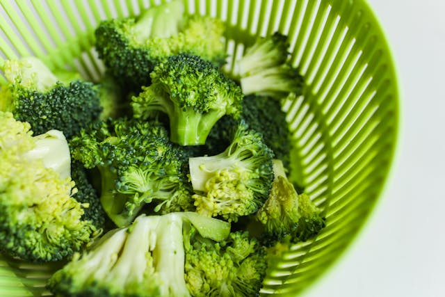

Easy Roasted Broccoli

Description
Roasted broccoli is easy to make and so much more flavorsome than boiled. My favorite part is the roasted sliced stem pieces.
Ingredients
- 14 ounces broccoli
- 1 tablespoon olive oil
- salt and ground black to taste
Steps
- Cut the florets from the stalk.
- Peel the salk and cut into slices.
- Toss the florets and stem pieces with oil, then transfer to a baking sheet.
- Season with salt and pepper and roast in the preheated oven.